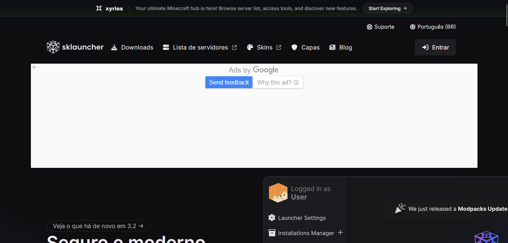
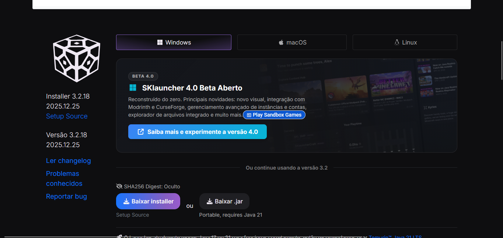
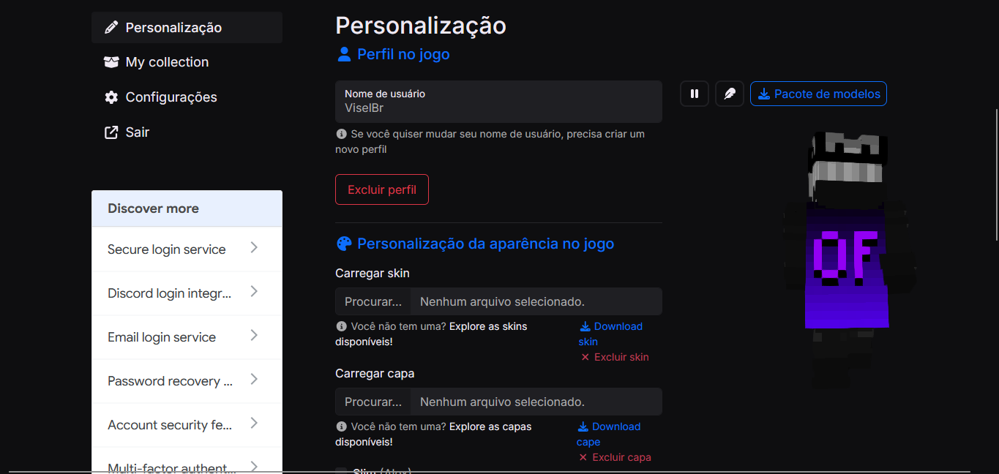
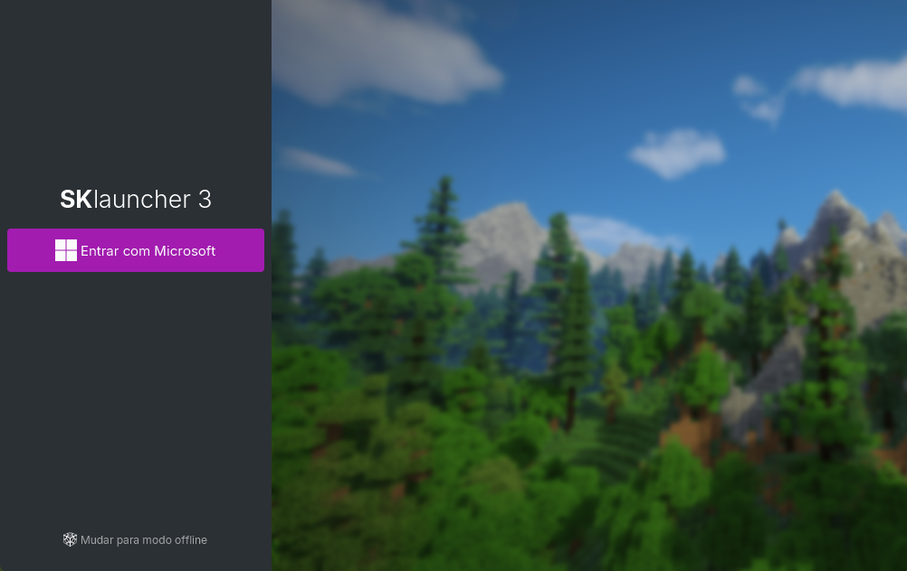
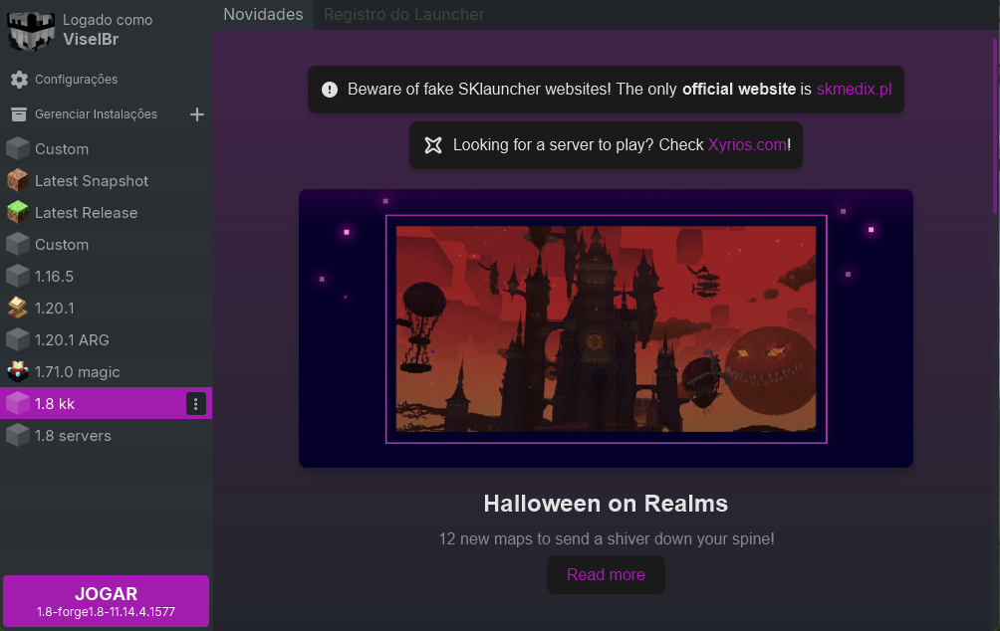

Baixe o launcher somente da fonte oficial para evitar cópias falsas.
ETAPA 1
Baixe e instale o SKlauncher
-
1
Abra o site oficial
Acesse skmedix.pl e selecione Downloads no menu. A imagem mostra a página oficial e o botão Entrar.

Site oficial do SKlauncher -
2
Baixe o instalador
Na página de downloads, escolha seu sistema operacional. No Windows, selecione Baixar installer para obter o Setup recomendado. A imagem mostra a opção do Windows.
Quando o download terminar, abra o arquivo e siga as etapas do instalador. Depois, inicie o SKlauncher pelo atalho criado.

Selecione o instalador para seu sistema
ETAPA 2
Crie sua conta e perfil
A conta SKlauncher é opcional para experimentar o launcher. O perfil permite escolher seu nome de jogo e personalizar a aparência.
-
1
Abra a página de cadastro
No site oficial, clique em Entrar, no canto superior direito, ou acesse skmedix.pl/login . Escolha a opção para criar uma conta.
Cadastre-se com e-mail ou Discord e siga as instruções exibidas no site para concluir o cadastro. O botão Entrar aparece na captura do site oficial da etapa anterior.
-
2
Configure seu perfil de jogo
Depois de entrar na conta pelo navegador, abra Personalização. Escolha um nome de usuário disponível. A mesma página permite carregar uma skin ou uma capa, se quiser.

Perfil de jogo e opções de personalização
A conta do site e o perfil no jogo são etapas diferentes. Mantenha acesso ao e-mail ou Discord usado no cadastro para recuperar sua conta. Nunca compartilhe sua senha ou códigos de verificação.
ETAPA 3
Entre no SKlauncher
-
1
Escolha uma forma de entrar
Se você possui Minecraft: Java Edition, clique em Entrar com Microsoft e autentique a conta Microsoft que possui o jogo.
Para usar o nome do perfil SKlauncher, clique em Mudar para modo offline, digite o nome de usuário escolhido na página de personalização e confirme. O modo offline não pede a senha da conta SKlauncher nem concede uma licença do jogo.

Entrada Microsoft ou modo offline -
2
Confira se entrou e inicie o jogo
Após a entrada, o nome do perfil aparece no canto superior esquerdo, como na imagem. Escolha uma instalação na lista e clique em JOGAR.
A captura mostra uma instalação selecionada. Para este modpack, escolha uma instalação compatível com Minecraft 1.8.

Launcher aberto com o perfil conectado
O modo offline só permite jogar em servidores que aceitam esse tipo de conexão. Servidores que verificam contas Microsoft exigem a entrada oficial.